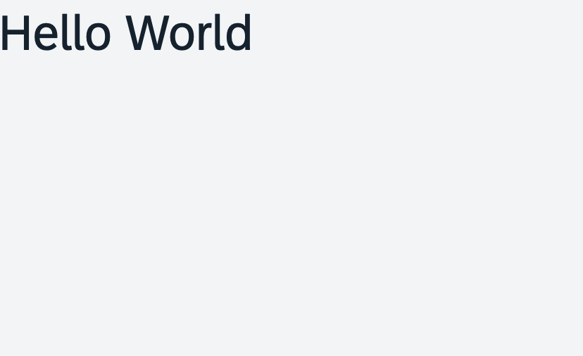

index.ts file will very soon result in a messy setup, and there is quite a bit of work ahead
of us. So let's do a first modularization by putting the sap/m/Text control into a dedicated
view.When working with OpenUI5, we recommend the use of XML views, as this produces the most readable code and forces us to separate the view declaration from the controller logic. Yet the look of our UI will not change.

You can view all files at OpenUI5 TypeScript Walkthrough - Step 4: XML Views and download the solution as a zip file.
We create a new view folder in our webapp folder and a new file called App.view.xml inside this folder.
The root node of the XML structure is the view. Here, we reference the default namespace sap.m
where the text control and the majority of our UI assets are located. We define an additional sap.ui.core.mvc
namespace with alias mvc, where the OpenUI5 views and all
other Model-View-Controller (MVC) assets are located.
<mvc:View
xmlns="sap.m"
xmlns:mvc="sap.ui.core.mvc">
</mvc:View>The namespace identifies all resources of the project and has to be unique. If you develop your own application code or controls,
you cannot use the namespace prefix sap, because this namespace is reserved for SAP resources. Instead, simply define
your own unique namespace (for example, myCompany.myApp).
Inside the View tag, we add the declarative definition of our text control with the same properties as
in the previous step. The XML tags are mapped to controls, and their attributes are mapped to control properties.
<mvc:View
xmlns="sap.m"
xmlns:mvc="sap.ui.core.mvc">
<Text text="Hello World"/>
</mvc:View>
In our index.ts script, we replace the instantiation of the sap/m/Text control by our new
App.view.xml file. The view is created by a factory function of OpenUI5. The name is prefixed with the namespace
ui5.walkthrough.view in order to uniquely identify this resource.
import XMLView from "sap/ui/core/mvc/XMLView";
XMLView.create({
viewName: "ui5.walkthrough.view.App"
}).then(function (view) {
view.placeAt("content");
});View names are capitalized
All views are stored in the view folder
Names of XML views always end with *.view.xml
XML namespaces are declared in the root element of the view. As a general rule, the default XML namespace is sap.m
Other XML namespaces use the last part of the SAP namespace as alias (for
example, mvc for sap.ui.core.mvc)